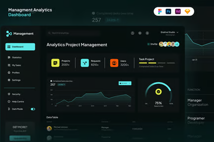
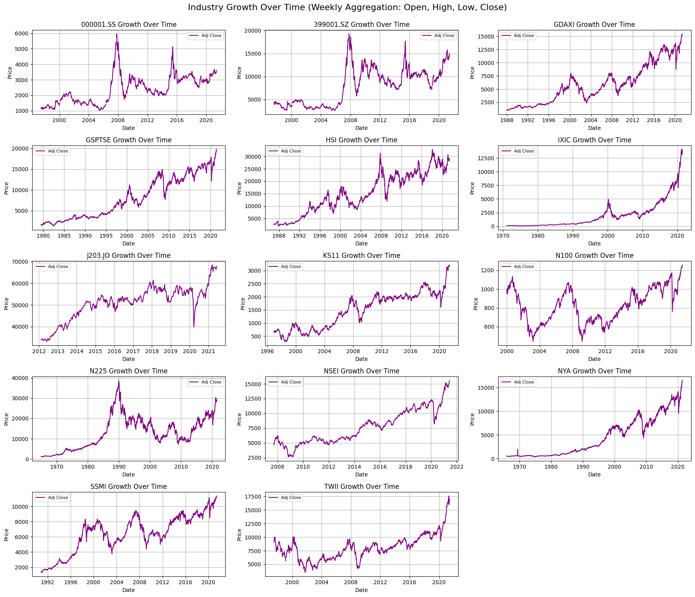
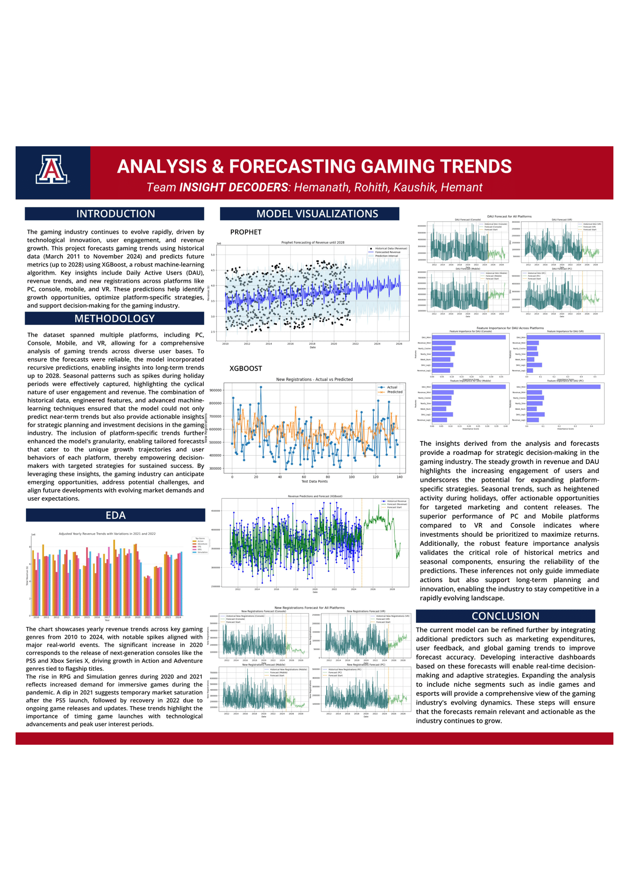

-
Jan 2025 - Present
Chief Technology Officer (CTO)
KamuitRemote
As CTO of Kamuit, I drive the technical vision and execution of our detour-aware, community-first ridesharing platform, ensuring that everyday commutes are transformed into safe, efficient, and shared journeys. I architect and implement our driver assignment, detour-aware matching, and fallback logic using H3 - Hexagonal Hierarchical Edge-Cutting Grid System, Alonso Moro Algorithm, FastAPI, PostgreSQL + PostGIS, and Google Maps/Places APIs, balancing scalability with real-time performance. I designed and deployed multi-layered matching algorithms, combining spatial filtering, polyline overlap, and ETA-based detour scoring—to minimize driver inconvenience while maximizing match success rates. I lead the development of robust fallback and cancellation mechanisms with queue-based retries, timeouts, and fault-tolerant recovery, ensuring reliability even under driver rejections, GPS failures, or API outages. I oversee integration of Stripe Connect for cost-sharing payments, secure one-time login flows, and trust/safety modules that enforce driver verification and community reputation. Collaborating with engineers and stakeholders, I ensure metrics-driven development—tracking detour scores, match success rate, system latency, and CO₂ offset—to guide continuous improvement and investor-ready demonstrations.
-
March 2024 - Present
Graduate Research Assistant
Act Lab, University of ArizonaTucson, AZ, USA
At the Adaptive Control Technologies (ACT) Lab, I developed ShieldNN-AM, a dual-agent reinforcement learning framework that enhanced safety in autonomous driving by introducing adaptive safety margins to Control Barrier Functions (CBFs). I implemented predictive safety filters in the CARLA simulator, achieving zero collision rates while improving track completion from 94% to 98% and boosting speed efficiency by 20%. I engineered a multi-component reward system combining safety, performance, and efficiency signals, and optimized GPU training pipelines, reducing training time by 4×. Through theoretical analysis and simulation experiments, I demonstrated how adaptive margins preserve provable safety guarantees while enabling aggressive-but-safe performance.March 2024 - Present
Graduate Research Assistant
-
May 2024 - Present
Graduate Tutor
SALT Center, University of ArizonaTucson, AZ, USA
At the SALT Center, I tutored 50+ undergraduate studentsComputer Science, Information Management, and Information Technology courses. I created innovative, student-centered teaching strategiesproblem-solving confidence by equipping students with tools for debugging, time management, and independent learning. This role strengthened my ability to translate complex technical concepts into clear, practical explanations, while fostering resilience and growth in students navigating rigorous STEM coursework.
-
August 2024 - December 2025
Data Engineer and Analyst Extern

Banner HealthPhoenix, AZ, USA
At Banner Health, I worked with a cross-functional team to deliver a data-driven strategy for hospital expansion and senior health equity across Arizona, Colorado, and Utah. I analyzed Medicare inpatient discharge data, chronic disease prevalence, and social determinants of health (SDOH) to identify service gaps and quantify community needs. My modeling revealed that housing insecurity was the strongest predictor of chronic disease burden, while hotspot mapping flagged high-growth counties like Pinal (AZ) and El Paso (CO) as prime expansion opportunities. I synthesized findings into interactive heatmaps, risk indices, and regression models, enabling Banner to target underserved populations such as dual-eligible seniors and rural communities with elevated diabetes and depression rates. The final recommendations balanced capacity growth in core markets (Phoenix, Tucson) with equity-focused interventions (community health workers, mobile clinics, behavioral health integration), directly aligning expansion with mission-driven community impact
August 2024 - December 2025
Data Engineer and Analyst Extern
-
June 2024 - August 2024
Software Development Intern (GenAI)
Selector AIPhoenix, AZ, USA
At Selector AI, I advanced the Logminer observability platform, which ingests machine logs through rsyslog, Promtail, and Kafka, and surfaces insights in Grafana dashboards for real-time monitoring. I replaced the system’s Random Forest classifier with BM25S, a modern sparse retrieval algorithm, enabling orders-of-magnitude faster and more reproducible log event classification across variants This involved benchmarking multiple BM25 variants, implementing eager sparse scoring, and optimizing throughput so the pipeline could handle millions of daily log events with low latency. I upgraded the Logminer codebase from Python 3.8 to 3.12, modernizing UDF normalization, inference, and NER training modules, while ensuring compatibility with Kafka-based distributed log streams. Working closely with Selector’s observability engineers, I strengthened the platform’s ability to correlate logs with metrics and alerts, empowering enterprise customers to identify anomalies, trace root causes, and reduce mean time to resolution (MTTR) within their infrastructure.
-
June 2023 - July 2024
Data Scientist
Johnson ElectricChennai, TN, India
As a Data Scientist at Johnson Electric, I designed and deployed AI-powered solutions that transformed manufacturing productivity, quality assurance, and enterprise AI adoption. My most impactful contribution was developing a Kalman Filter–based model, coupled with SQL-driven data pipelines, to predict mass outflow in Tesla AGP Water Pumps. Integrated into End-of-Line (EOL) testing via Dockerized deployments on VMs, this solution reduced testing time by 72% for 80W pumps and 50% for 50W pumps—delivering monthly cost savings of $74K. I also improved actuator defect detection by building an ensemble model (Gradient Boosting + Random Forest) that analyzed vibration frequency data in real time, achieving 93% accuracy and reducing test cycle times by 83%. Results were surfaced via PyQt5 GUIs and Power BI dashboards, enabling data-driven decisions on the factory floor. For anomaly detection, I designed Power BI dashboards with SQL + statistical divergence methods (JSD, KL), achieving zero false positives in real-time monitoring. I further optimized leakage testing of ITMS Gen2 pumps by applying curve fitting, SVR, and skew-normal modeling, cutting test times from 160s to 45s with a 0.93 correlation coefficient. Beyond manufacturing, I spearheaded enterprise AI initiatives, including PLM Teamcenter chatbots powered by Streamlit, Azure Blob Storage, Microsoft Graph API, Marqo AI, Solr, and Azure OpenAI GPT models. These tools automated internal knowledge retrieval, integrated with SharePoint, and featured feedback loops stored in PostgreSQL for reliability and security. I also advanced predictive defect analysis via SNADE AI, leveraging hybrid Gradient Boosting and Random Forest methods to classify actuators in 8s cycles, and worked on synthetic data generation using GANs to improve anomaly detection across production lines. Through these efforts, I delivered measurable gains in manufacturing efficiency, defect prevention, predictive maintenance, and digitalization, establishing scalable AI pipelines that bridged research innovation with enterprise-grade deployment.
June 2023 - July 2024
Data Scientist
-
Dec 2022 - Jan 2023
Data Science Researcher

National University of SingaporeSingapore
In a research collaboration with the National University of Singapore (NUS), I led a project on Language-Invariant Hate Speech and Gender Bias Detection, developing an AI-powered content moderation system capable of identifying abusive speech across multiple languages. I combined an n-gram–based language identification module with feature extraction and classification using mBERT (Multilingual BERT) and GRU, fine-tuning hyperparameters and leveraging attention mechanisms to achieve high accuracy while minimizing false positives. I processed and cleaned large multilingual datasets, designed a scalable GPU-based training workflow, and implemented a robust pipeline for cross-lingual generalization. The research outcomes were later adapted into a business case for Hewlett Packard Enterprise (HPE), exploring applications in automated content regulation and ethical AI systems. Beyond model development, I played a critical role in deployment: building a Flask-based RESTful API, integrating it with a React frontend for real-time moderation, and deploying the system on a Microsoft Azure VM instance for scalability testing. As Team Leader, I coordinated a team of six multinational researchers, led rigorous evaluation studies, and presented results to HPE executives—demonstrating the system’s feasibility for enterprise adoption, responsible AI governance, and commercial deployment.
-
Jan 2022 - Mar 2022
Full Stack Developer Intern
Suvidha FoundationRemote, India
As a Full Stack Developer Intern, I built a comprehensive university management system with end-to-end ownership of design, development, and deployment. On the frontend, I developed responsive interfaces using JavaScript, while implementing server-side logic in PHP for secure data handling and business workflows. For deployment, I integrated Heroku for cloud hosting and Apache XAMPP for local testing and development, ensuring smooth transitions from development to production environments. Security was prioritized through JWT-based authentication and RESTful APIs for robust and secure data exchange. I also automated CI/CD pipelines and managed version control via Git, streamlining deployments and improving reliability. My contributions to the project’s functionality, scalability, and automation earned me the company’s “Golden Intern” award for outstanding performance.
Jan 2022 - Mar 2022
Full Stack Developer Intern
Projects




